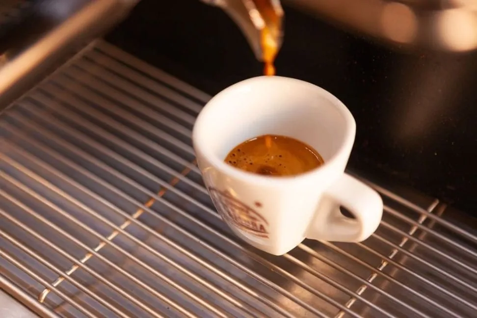
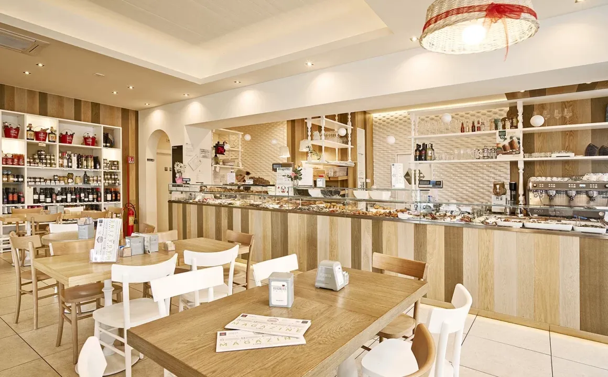
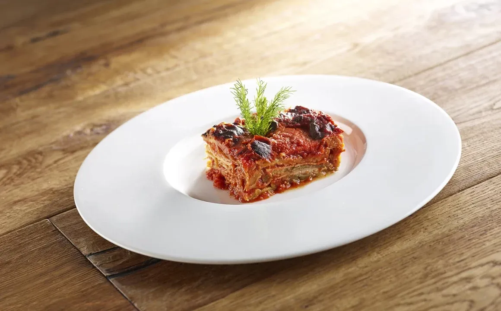

Mattina · dalle 07:00
Adesso
Colazione al banco
Caffè e dolci del mattino, per cominciare la giornata con un accento del Sud.
Via Pietro Giannone 1, Varese
334 127 8236
All Day Puglia Experience · Varese
Un grande banco di specialità pugliesi, diverso ogni giorno. Prendi quello che ti va, anche in micro porzioni, e paghi a peso.

Niente menù. Solo il banco.
Come funziona
L'appetito te lo apre la vista del banco. I piatti cambiano ogni giorno, in base agli ingredienti che si trovano e all'estro dello Chef Maurizio.
Guardi, assaggi con gli occhi e indichi quello che vuoi. Libertà totale, nessuna portata obbligatoria.
Un cucchiaio di tutto o un piatto pieno di una cosa sola. Con le micro porzioni la quantità la decidi tu.
Ti accomodi e ti serviamo al tavolo. Oppure ti prepariamo tutto da portare via.
All Day Puglia Experience
Il banco non chiude mai durante il giorno: passa quando vuoi, per un caffè o per una cena.

Caffè e dolci del mattino, per cominciare la giornata con un accento del Sud.

Primi, secondi, verdure e fritti preparati ogni giorno. Veloce in pausa pranzo, o con calma.
Un tagliere di assaggi dal banco, taralli e un calice di vino pugliese.
Ti siedi, ti serviamo al tavolo. Oppure porti a casa la cena già pronta.
Prima di venire
A peso. Scegli al banco quello che vuoi, nelle quantità che vuoi, e paghi in base a quanto pesa il piatto.
No. I piatti al banco cambiano ogni giorno, in base agli ingredienti disponibili e alle idee dello Chef Maurizio.
Sì, tutto quello che c'è al banco si può portare a casa.
Sì. Scegli al banco, ti accomodi e i piatti te li portiamo noi.
Scrivici su WhatsApp o chiama il 334 127 8236.
Tutti i giorni, dalle 07:00 alle 22:00.
La cantina
Al tavolo c'è solo Puglia, anche nel bicchiere. Chiedici cosa abbinare a quello che hai preso al banco.
E se ti è piaciuto, sugli scaffali trovi prodotti pugliesi da portare a casa.
Vieni a trovarci